材料 2個分
※粉量を変えると自動計算されます
生地
フィリング
作り方
生地
STEP 1
ホームベーカリーで生地を作る
ホームベーカリーに材料をセットし「生地コース」で生地を作ります。コースが終わったら、次の作業に進みます。
ホームベーカリーに材料をセットし「生地コース」で生地を作ります。コースが終わったら、次の作業に進みます。
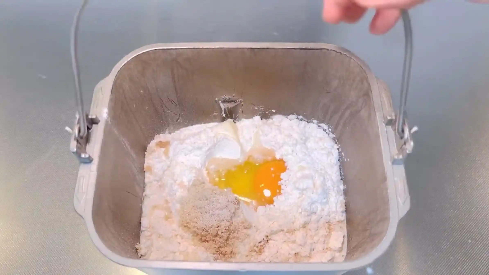
STEP 2
フィリングを作る
STEP 3
生地を取り出し、15分おく
ケースから生地を取り出し、軽く丸めます。乾燥しないようにボウルをかぶせて、室温で休ませます。こうすることで、生地がゆるみ、次の工程で伸ばしやすくなります。
ケースから生地を取り出し、軽く丸めます。乾燥しないようにボウルをかぶせて、室温で休ませます。こうすることで、生地がゆるみ、次の工程で伸ばしやすくなります。
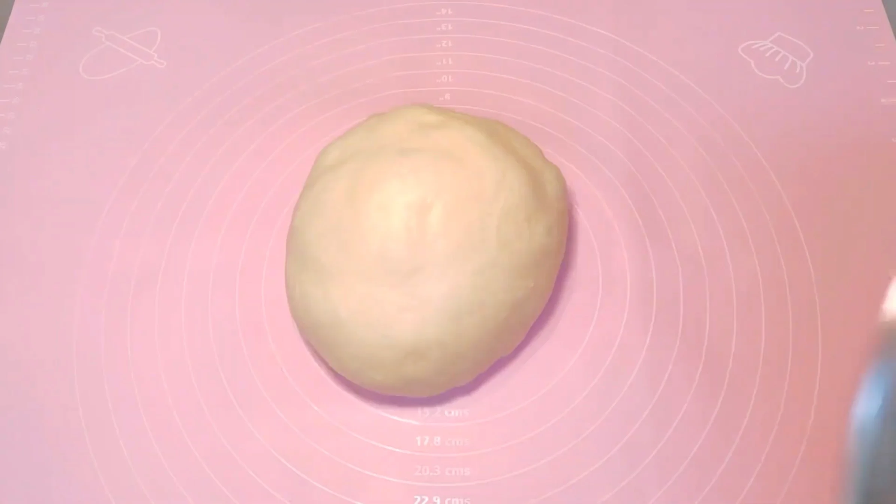
STEP 4
生地を縦36㎝×横45㎝に伸ばす
生地を四角に伸ばす際は、中央から左上、右上、左下、右下へと、めん棒を外側に向かって動かします。中央から四隅へ均等に伸ばしていくと、自然と四角い形に整っていきます。
生地を四角に伸ばす際は、中央から左上、右上、左下、右下へと、めん棒を外側に向かって動かします。中央から四隅へ均等に伸ばしていくと、自然と四角い形に整っていきます。
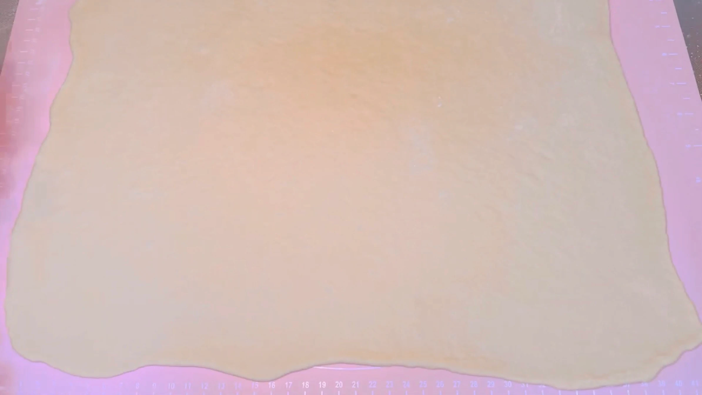
STEP 5
生地を6等分し、フィリングを塗る
生地を横方向に6等分し、それぞれにフィリングを塗ります。フィリングを端までたっぷり塗ると、包むときにはみ出しやすいため、少し余白を残しておきます。
生地を横方向に6等分し、それぞれにフィリングを塗ります。フィリングを端までたっぷり塗ると、包むときにはみ出しやすいため、少し余白を残しておきます。
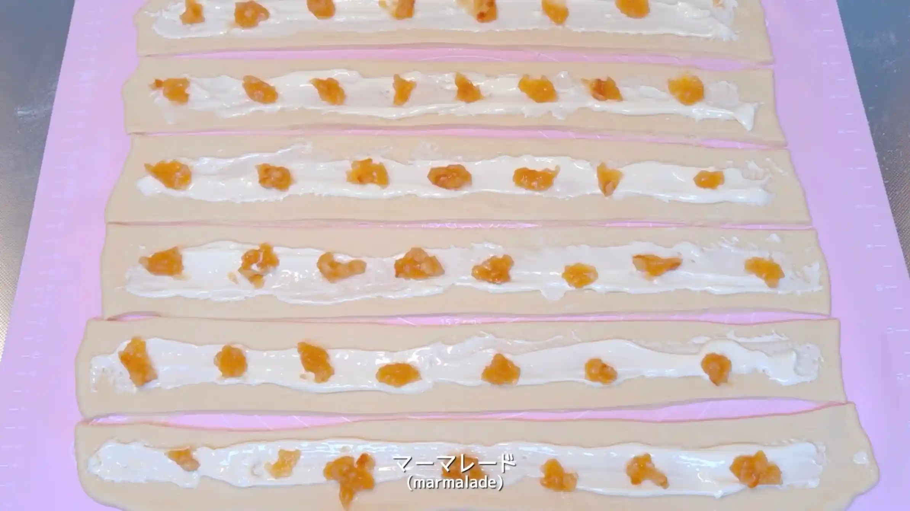
STEP 6
フィリングを包み、棒状にする（[動画 02:10]）
フィリングを内側に包み込むように生地を閉じ、棒状に整えます。とじ目が開いてしまうと、三つ編みにするときにフィリングが出てきやすいため、生地同士をしっかり閉じておきます。
フィリングを内側に包み込むように生地を閉じ、棒状に整えます。とじ目が開いてしまうと、三つ編みにするときにフィリングが出てきやすいため、生地同士をしっかり閉じておきます。
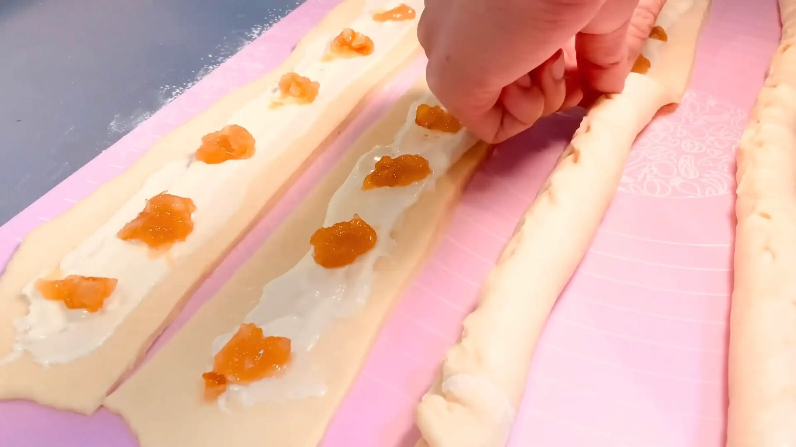
STEP 7
ベタつく場合は粉をかける
フィリングがはみ出したり、生地が手や作業台にくっついて扱いにくい場合は、少量の粉をふって作業します。粉は必要な分だけ、少しずつ使うのがポイントです。
フィリングがはみ出したり、生地が手や作業台にくっついて扱いにくい場合は、少量の粉をふって作業します。粉は必要な分だけ、少しずつ使うのがポイントです。
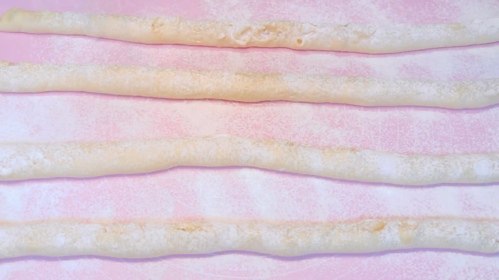
STEP 8
三つ編みを2つ作る（[動画 03:35]）
6本の棒状にした生地を3本ずつに分け、それぞれ三つ編みにします。生地を引っ張るとフィリングがはみ出したり、生地が伸びてしまうため、なるべく自然な力でやさしく編むのがポイントです。
6本の棒状にした生地を3本ずつに分け、それぞれ三つ編みにします。生地を引っ張るとフィリングがはみ出したり、生地が伸びてしまうため、なるべく自然な力でやさしく編むのがポイントです。
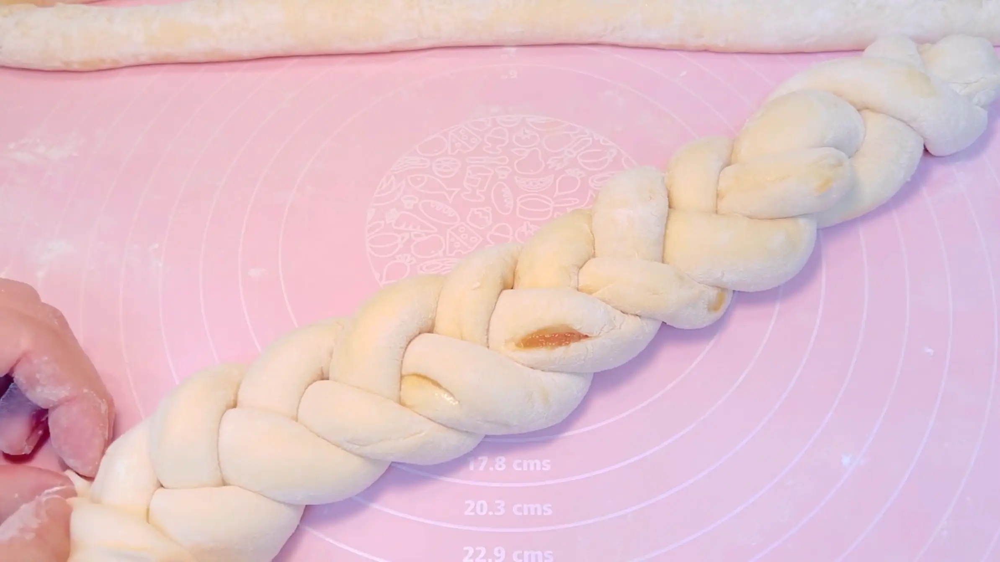
STEP 9
天板にのせ、室温で50分おく
乾燥しないようにラップをかけ、成形した生地を二次発酵させます。発酵時間は室温によって変わるため、50分を目安に、生地がふっくらと膨らんだら次の工程へ進みます。
乾燥しないようにラップをかけ、成形した生地を二次発酵させます。発酵時間は室温によって変わるため、50分を目安に、生地がふっくらと膨らんだら次の工程へ進みます。
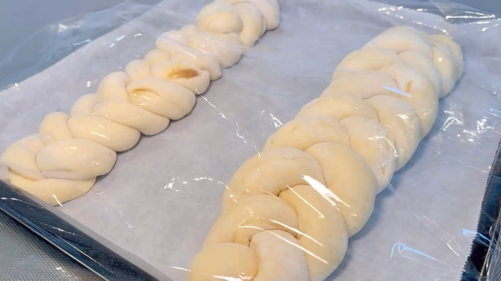
STEP 10
オーブンを190℃に予熱する
焼成前にオーブンを190℃にしっかり予熱しておきます。
焼成前にオーブンを190℃にしっかり予熱しておきます。
STEP 11
牛乳を塗り、グラニュー糖をふる
焼成前に生地の表面へ牛乳を薄く塗り、グラニュー糖をふります。牛乳を塗ることで表面に焼き色がつきやすくなり、グラニュー糖が焼けて香ばしい風味も加わります。
焼成前に生地の表面へ牛乳を薄く塗り、グラニュー糖をふります。牛乳を塗ることで表面に焼き色がつきやすくなり、グラニュー糖が焼けて香ばしい風味も加わります。
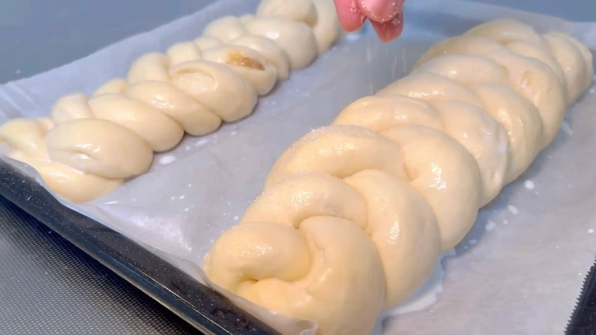
STEP 12
オーブン190℃で25分焼く
表面がきつね色になるまで焼きます。焼き時間は目安とし、表面の焼き色を確認しながら、ご家庭のオーブンに合わせて調整してください。
表面がきつね色になるまで焼きます。焼き時間は目安とし、表面の焼き色を確認しながら、ご家庭のオーブンに合わせて調整してください。
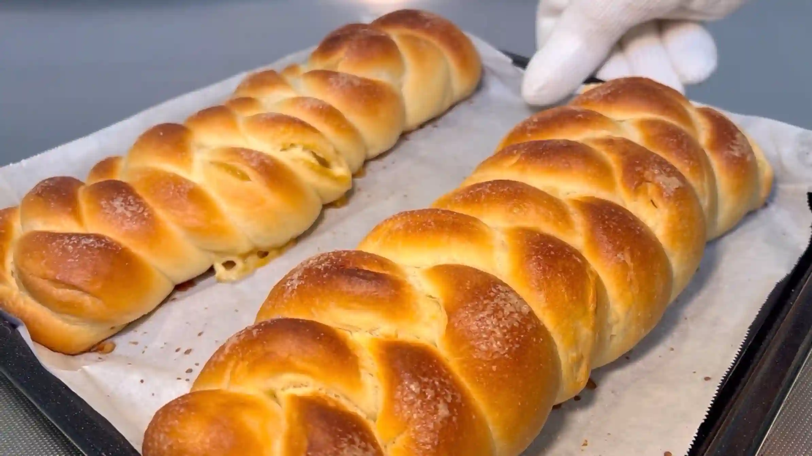
フィリング
STEP 1
クリームチーズとグラニュー糖を混ぜる
クリームチーズをなめらかにし、グラニュー糖を加えてよく混ぜ合わせます。砂糖のざらつきがなくなり、全体がなめらかになれば混ぜ終わりです。
クリームチーズをなめらかにし、グラニュー糖を加えてよく混ぜ合わせます。砂糖のざらつきがなくなり、全体がなめらかになれば混ぜ終わりです。
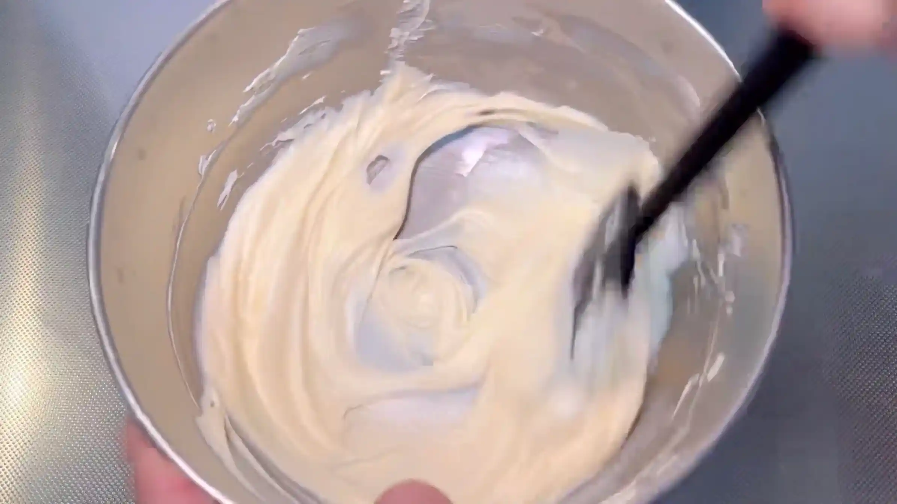
STEP 2
冷蔵しておく
フィリングを冷蔵庫で冷やしておきます。冷蔵すると硬さが出るため、生地に塗るときは、軽く混ぜてから使います。
フィリングを冷蔵庫で冷やしておきます。冷蔵すると硬さが出るため、生地に塗るときは、軽く混ぜてから使います。
動画でチェック
おいしく作るためのワンポイントコラム
伝統的なハラーブレッドは、卵や乳製品を使わないのが一般的です。今回は、そこに卵、牛乳、バターを贅沢に加えて、リッチで食べ応えのある、ゴツッと太めの三つ編みパンに仕上げます。
祝祭日にぴったりな、華やかな『ハラーブレッド』のアレンジレシピ。リッチな仕上がりにするための2つのコツをまとめました。
① 生地のコツ
伝統的なハラーブレッドは卵や乳製品を使わないのが一般的ですが、今回のレシピでは卵、牛乳、バターを贅沢に配合してリッチな味わいに仕上げるのがポイントです。これらの副材料を加えることで、生地全体の保水性とコクがアップし、焼き上がったあともパサつかず、翌日までふんわりと柔らかい口当たりをキープすることができます。
② 三つ編み成形のコツ
3本の棒状の生地をきれいに三つ編みするには、全体の太さを均一に揃え、引っ張らずに交差させていくのがコツです。生地を無理に引っ張って編むと、発酵や焼成の段階で引っ張られた部分がちぎれたり、歪んだりする原因になります。3本の紐を同じ力加減（テンション）でふんわりと優しく重ねていくことで、オーブンの中で均一に膨らみ、どこをカットしても美しい編み目が現れます。本レシピでは生地にフィリングを巻き込んでいますが、少し難易度が高いため、フィリングなしで作るのもおすすめです！
編み込みの楽しい成形と、オーブンから漂う甘い香りは最高です。黄金色に焼き上がったパンはしっとりふんわり幸せな食感！
祝祭日にぴったりな、華やかな『ハラーブレッド』のアレンジレシピ。リッチな仕上がりにするための2つのコツをまとめました。
① 生地のコツ
伝統的なハラーブレッドは卵や乳製品を使わないのが一般的ですが、今回のレシピでは卵、牛乳、バターを贅沢に配合してリッチな味わいに仕上げるのがポイントです。これらの副材料を加えることで、生地全体の保水性とコクがアップし、焼き上がったあともパサつかず、翌日までふんわりと柔らかい口当たりをキープすることができます。
② 三つ編み成形のコツ
3本の棒状の生地をきれいに三つ編みするには、全体の太さを均一に揃え、引っ張らずに交差させていくのがコツです。生地を無理に引っ張って編むと、発酵や焼成の段階で引っ張られた部分がちぎれたり、歪んだりする原因になります。3本の紐を同じ力加減（テンション）でふんわりと優しく重ねていくことで、オーブンの中で均一に膨らみ、どこをカットしても美しい編み目が現れます。本レシピでは生地にフィリングを巻き込んでいますが、少し難易度が高いため、フィリングなしで作るのもおすすめです！
編み込みの楽しい成形と、オーブンから漂う甘い香りは最高です。黄金色に焼き上がったパンはしっとりふんわり幸せな食感！


祝祭日にぴったりな、ボリューム満点の華やかな三つ編みパン『ハラーブレッド』のアレンジレシピです。卵やバターを加えたリッチな生地でふんわり焼き上げます。コラムでは「生地のコツ」「三つ編み成形のコツ」の2つのポイントをご紹介します。